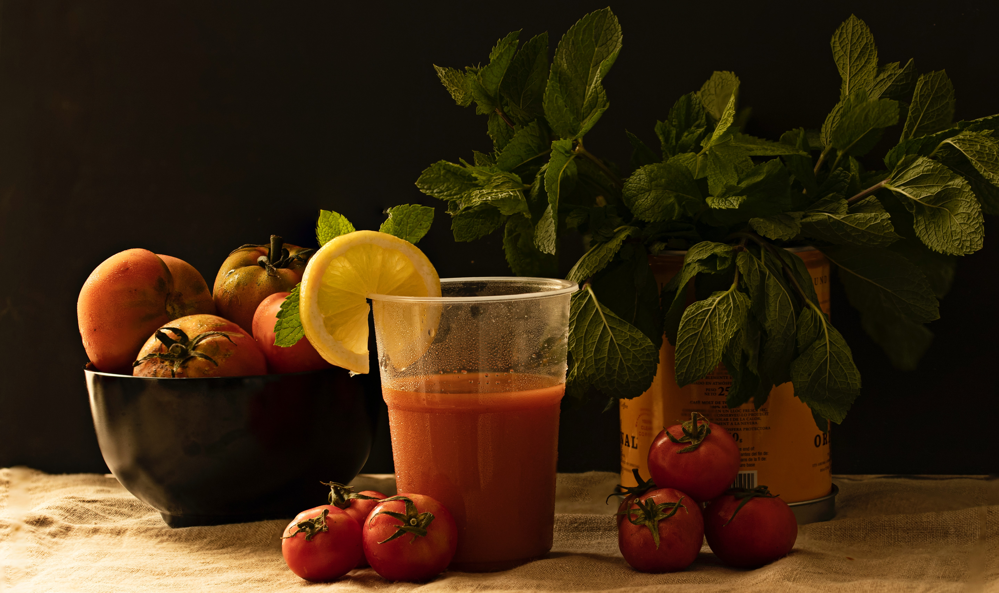
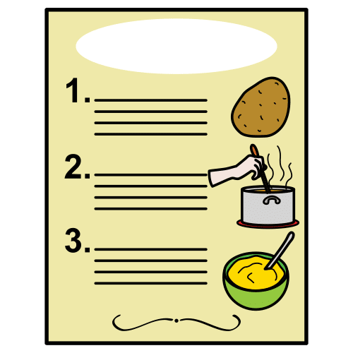
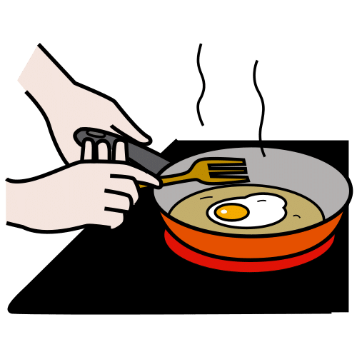

4.1. Descubre la gastronomía andaluza

¿Te has planteado alguna vez qué comes? ¿Por qué no tomas gazpacho en invierno? ¿Y por qué freímos con aceite de oliva y no con mantequilla?
Pues, aunque te parezca mentira, hay una gran relación entre el sitio en el que vives y lo que comes. ¿Te atreves a saber más?
Fíjate en lo que dice el famoso cocinero Enrique Sánchez, chef sevillano, que desde 2010 presenta el programa “Cómetelo” en Canal Sur Televisión. Sánchez presenta a diario la elaboración de platos originarios de Andalucía, con recetas y todo el sabor de Andalucía.

Definición:
Sopa fría que se prepara con hortalizas crudas trituradas, principalmente tomate, cebolla, pimiento y pepino, mezcladas con vinagre, ajo, aceite y miga de pan.
Ejemplo:
Me encanta beber gazpacho en verano.

Definición:
Fórmula de composición de un producto que incluye los ingredientes que intervienen en él y sus cantidades, el modo de elaborarlo y en ocasiones su forma de aplicarse, administrarse o servirse.
Ejemplo:
La receta de croquetas de mi abuela es la mejor.

Definición:
Cocinar un alimento en aceite u otro tipo de grasa hirviendo.
Ejemplo:
Tengo hambre, me voy a freír un huevo.
Lectura facilitada
¿Piensas alguna vez qué comes?
¿Por qué no bebes gazpacho en invierno?
¿Por qué fríes con aceite de oliva?
Hay relación entre dónde vives y qué comes.
El cocinero Enrique Sánchez explica cómo hacer platos.
Presenta el programa “Cómetelo” en Canal Sur Televisión,
con recetas y todo el sabor de Andalucía.
Definición:
Cocinar un alimento en aceite.
Ejemplo:
Tengo hambre, me voy a freír un huevo.
Definición:
Texto sobre un plato donde aparecen los ingredientes, cantidades y el modo de elaborarlo.
Ejemplo:
La receta de croquetas de mi abuela es la mejor.
Apoyo visual

Lectura facilitada
¿Conoces los alimentos de tu tierra?
Andalucía es una despensa de alimentos
como fruta, verdura, aceite de oliva y jamón.
¡Qué rico está el jamón! ¡Madre mía!
Además, su costa ofrece atunes, caballas o chocos.
Su gastronomía se conoce como dieta mediterránea.
¿Cuánto sabes de lo que comes?
En verano comemos gazpacho, salmorejo o la porra granadina.
En invierno, comemos pucheros y migas.
La gastronomía es parte de nuestro patrimonio cultural
y es nuestra obligación cuidarla.
¿Y cómo la protegemos?
Conociendo y valorando el trabajo que hacen agricultores, ganaderos y pescaderos.
Todo esto es lo que vas a aprender.
Definición:
Pez largo de color azul y verde con rayas negras.
Ejemplo:
Me encanta comer caballa con tomate aliñado.
Definición:
Ejemplar joven de sepia.
Ejemplo:
Los chocos fritos son una de las tapas más típicas de Andalucía.
Definición:
Habitación o lugar de una casa u otro edificio donde se almacenan y conservan alimentos.
Ejemplo:
Para guardar los ingredientes es necesario tener una buena despensa en la cocina.
Definición:
Cría de animales para su explotación y comercio.
Ejemplo:
En mi comarca la ganadería está asociada al mundo del toro.
Definición:
Platos típicos de un lugar.
Ejemplo:
La tortilla de patatas es propia de la gastronomía de Andalucía.
Definición:
Sopa fría que se prepara con hortalizas y verduras crudas trituradas.
Ejemplo:
Me encanta beber gazpacho en verano.
Definición:
Expresión del mundo de la cocina, que se usa para decir que has recibido un mensaje correctamente, que lo has comprendido bien.
Ejemplo:
Cuando el camarero pidió los platos, el cocinero respondió: ¡oído cocina!